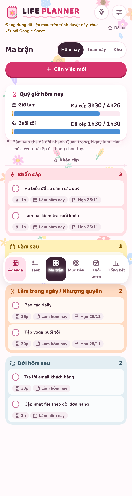
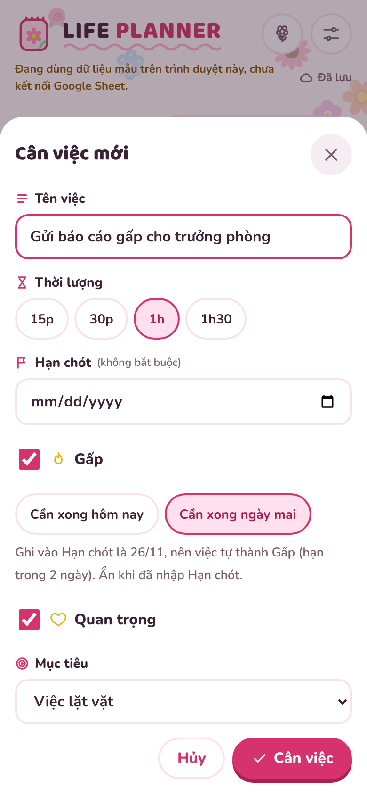
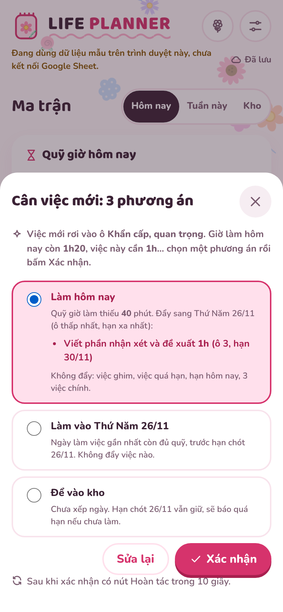
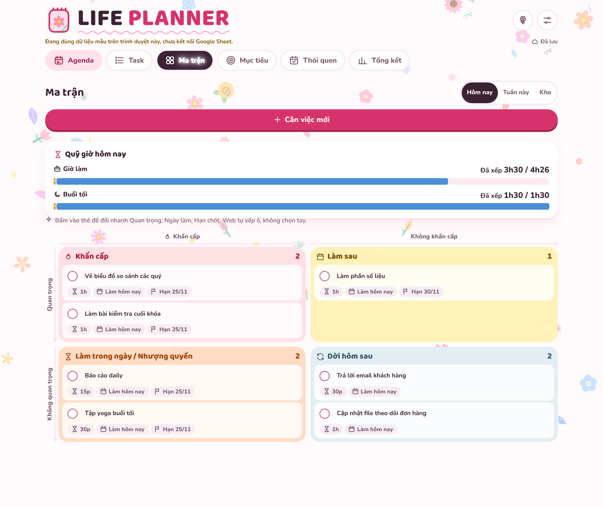
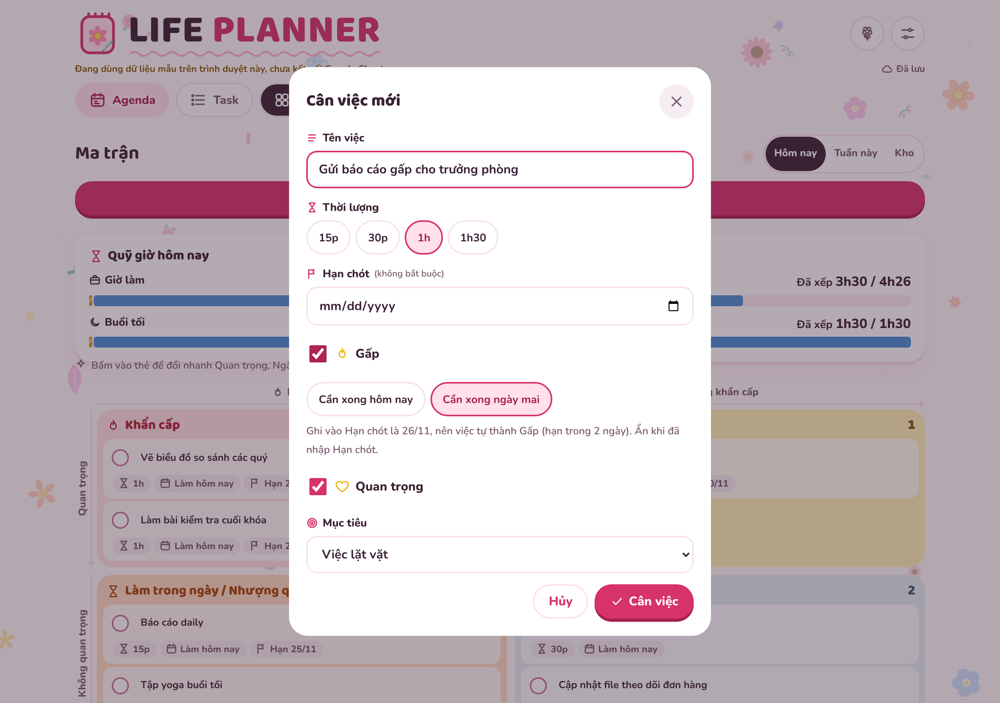

Ảnh dựng trên bản mock, chỉ để xem trước. Chưa có code thật.
Tab Ma trận (6 tab ở thanh dưới điện thoại): chọn phạm vi Hôm nay, Tuần này, Kho. Có thanh quỹ giờ của phạm vi đang xem, 4 ô Quan trọng x Gấp web tự xếp. Mỗi thẻ hiện tên, thời lượng, ngày làm, hạn chót. Bấm thẻ để đổi nhanh Quan trọng, Ngày làm, Hạn chót.
Cân việc mới: nhập tên, thời lượng, hạn chót (có thể trống), Quan trọng, mục tiêu. Công tắc Gấp chỉ hiện khi chưa có hạn chót: bấm Gấp thì chọn "Cần xong hôm nay" hoặc "Cần xong ngày mai", web ghi vào hạn chót, không lưu cờ riêng.
Kết quả: việc mới được đánh dấu nổi bật trong ma trận, kèm tối đa 3 phương án nêu rõ hệ quả (Làm hôm nay có liệt kê việc bị đẩy, Làm vào ngày gần nhất còn đủ quỹ, Để vào kho). Chọn một rồi bấm Xác nhận, có Hoàn tác 10 giây. Không bao giờ tự đề xuất đẩy: việc ghim, quá hạn, hạn hôm nay, 3 việc chính.
Điện thoại (390px)
1. Tab Ma trận

2. Form Cân việc mới

3. Ba phương án

Máy tính (1280px)
1. Tab Ma trận

2. Form Cân việc mới

3. Ba phương án (việc mới nổi bật ở ô Khẩn cấp phía sau)